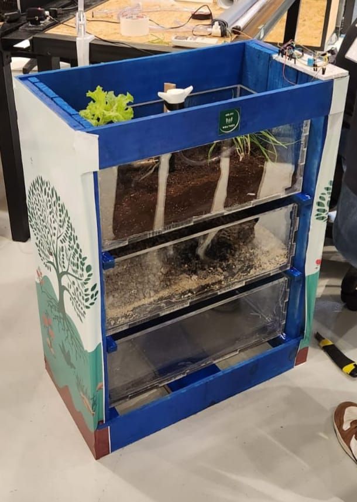

Portfólio de Lucas Alexandre
Como um estudante fascinado por tecnologia, busquei aprimorar competências que me permitissem atuar nas mais diversas áreas de conhecimento, de forma que me tornei um profissional versátil, com habilidades que vão desde à área administrativa e de gerenciamento de custos, até à prototipação, manutenção e criação de sites responsivos. Aprendo rápido e sou um autodidata com uma forte capacidade de adaptação à qualquer situação ou demanda que seja necessária cumprir. Minhas especialidades incluem Javascript (ES6), HTML5, CSS3 e a ferramenta MongoDB.
Meus projetos
-

Helpy Weather
A Mostra Inova 2023 foi uma competição promovida pela FIRJAN SENAI reuniu 14 projetos desenvolvidos no espaço educacional que visava incentivar a busca por soluções de problemas na indústria através de inovações desenvolvidas por alunos da instituição. O Helpy Weather, projeto com o qual eu e minha equipe concorremos, chegou à segunda etapa do nível estadual. É um projeto de irrigação sustentável automatizado, controlado por um aplicativo desenvolvido em Javascript e Python com framework Kivy.
Contatos
Caso queira saber mais, basta mandar um e-mail para o endereço abaixo ou acessar minha página no LinkedIn.